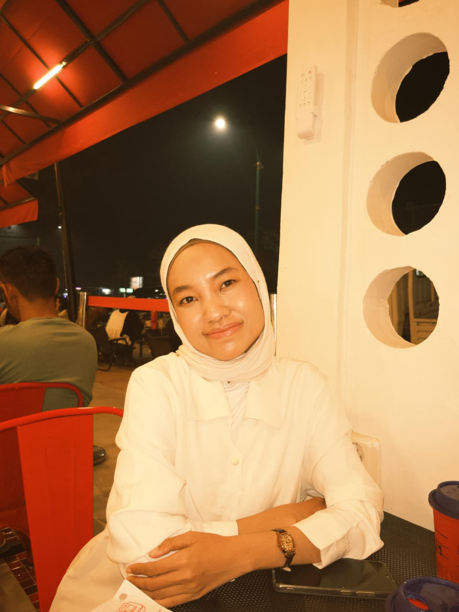

PORTOFOLIO PRIBADI
Bertumbuh,
Berkembang,
dan Berkontribusi
untuk Lingkungan yang Sehat
Lestari, A.Md.Kes — Tenaga Sanitasi Lingkungan

TENTANG SAYA
Halo, saya Lestari.
Saya merupakan lulusan D3 Sanitasi dari Poltekkes Kemenkes Banjarmasin dengan kompetensi sebagai Tenaga Sanitasi Lingkungan Level 5.
Memiliki ketertarikan pada bidang kesehatan lingkungan, inspeksi sanitasi, pengelolaan lingkungan, serta upaya peningkatan kualitas kesehatan masyarakat.
Saya senang mempelajari hal baru, memiliki kemampuan dalam penyusunan laporan dan pengolahan data, serta mampu bekerja secara mandiri maupun dalam tim.
LATAR BELAKANG
Pendidikan & Pengalaman.
Poltekkes Kemenkes Banjarmasin
Diploma III — Sanitasi
RSUD H. Badaruddin Kasim
Program Maganghub — Tenaga Sanitasi Lingkungan
Puskesmas Guntung Payung
Praktik Kerja Puskesmas
RSD Idaman Banjarbaru
Praktik Kerja Rumah Sakit
PT Sinar Nusantara Industries
Praktik Kerja Industri
BIDANG KOMPETENSI
Kompetensi &Keahlian.
Inspeksi Sanitasi Lingkungan
Pengamatan dan penilaian kondisi sanitasi lingkungan.
Pengawasan Kualitas Lingkungan
Pemantauan faktor lingkungan yang berpengaruh terhadap kesehatan.
Pengolahan Data
Pengumpulan, pengolahan, dan penyajian data.
Penyusunan Laporan
Penyusunan dokumen dan laporan secara sistematis.
KARYA & KONTRIBUSI
Proyek Pilihan.
KARYA TULIS ILMIAH
Sanitasi Pondok Pesantren Waratsatul Fuqaha
Penelitian deskriptif observasional untuk mengevaluasi mengenai kondisi sanitasi lingkungan pondok pesantren di Kecamatan Banjarbaru Selatan, Kota Banjarbaru.
D3 Sanitasi · 2025KEPEMIMPINAN & ORGANISASI
Ketua Pelaksana Webinar P3EPK 2024
Mengkoordinasikan pelaksanaan Pelatihan Penulisan Protokol Etik Penelitian Kesehatan (P3EPK) Tahun 2024 dengan total 114 peserta.
Manajemen Kegiatan · 2024KUALIFIKASI PROFESIONAL
Sertifikasi & Kompetensi.
Tenaga Sanitasi Lingkungan Level 5
Sertifikat Kompetensi — Kompeten
Surat Tanda Registrasi (STR)
Bidang Kesehatan Lingkungan
Sistem Manajemen K3 Berbasis SNI ISO 45001:2018
E-Learning BSN — Sangat Baik
RUANG UNTUK TERHUBUNG
Mari Terhubung.
Saya terbuka terhadap peluang kerja, kolaborasi profesional, dan kesempatan untuk terus belajar serta berkembang.